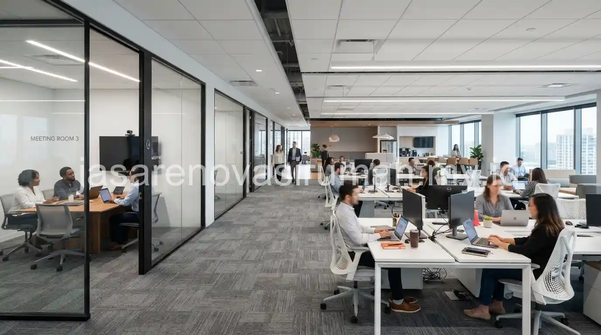
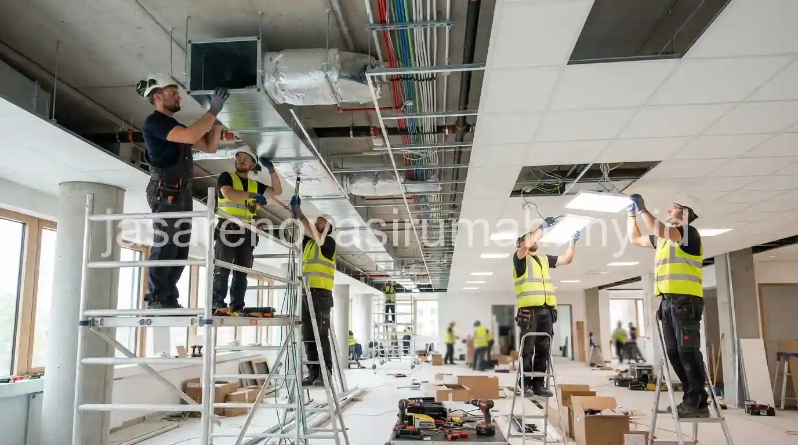

Biaya renovasi gedung kantor untuk standard fit-out secara umum berkisar antara Rp 2,5 juta hingga Rp 4,5 juta per meter persegi, mencakup pekerjaan partisi, plafon, lantai, AC, dan lighting dasar.
Angka ini masih bisa berubah tergantung kondisi awal ruangan, apakah kantor tersebut bare unit tanpa finishing sama sekali atau sudah memiliki sebagian instalasi dasar dari pengelola gedung.
Berapa Kisaran Biaya Renovasi Gedung Kantor Per Meter Persegi untuk Fit-Out Standar?
Kisaran biaya fit-out standar umumnya mencakup pekerjaan dasar seperti partisi ringan, plafon gypsum, lantai vinyl atau karpet tile, serta sistem AC split standar untuk ruangan berukuran menengah.
Berikut gambaran kisaran biaya berdasarkan tingkat fit-out yang umum ditemui di pasar:
| Tingkat Fit-Out | Cakupan Pekerjaan | Estimasi Biaya per M2 (Rp) |
|---|---|---|
| Fit-out standar | Partisi ringan, plafon gypsum, lantai vinyl, AC split | 2.500.000 - 4.500.000 |
| Fit-out menengah | Partisi kaca, plafon akustik, lantai karpet tile, AC cassette | 4.500.000 - 7.000.000 |
| Fit-out premium | Material custom, smart lighting system, AC VRV, furnitur built-in | 7.000.000 - 10.000.000+ |
Kisaran ini bersifat umum dan dapat bervariasi tergantung lokasi gedung, kondisi bangunan eksisting, serta spesifikasi merek material dan peralatan yang dipilih oleh tim HR/GA maupun manajemen perusahaan.
Apa Saja Komponen yang Termasuk dalam Biaya Fit-Out Kantor?
Komponen utama biaya fit-out kantor terdiri dari pekerjaan partisi, plafon, lantai, mekanikal elektrikal, serta sistem pendingin ruangan yang disesuaikan dengan kapasitas jumlah karyawan.

Berikut rincian komponen yang umumnya masuk dalam anggaran fit-out kantor:
- Partisi ruangan: pembatas antar ruang kerja, meeting room, atau area privat lainnya.
- Plafon dan lighting: plafon gypsum atau akustik dengan titik lampu sesuai kebutuhan pencahayaan kerja.
- Lantai: vinyl, karpet tile, atau homogeneous tile tergantung anggaran dan citra brand perusahaan.
- Sistem pendingin: AC split atau cassette disesuaikan dengan luas dan jumlah pengguna ruangan.
- Instalasi listrik dan data: jalur kabel untuk komputer, printer, dan perangkat kantor lainnya.
Sebelum menyusun anggaran fit-out, ada baiknya HR/GA juga mempelajari prinsip dasar penyusunan RAB agar tidak overbudget, sebagaimana dibahas pada panduan estimasi RAB renovasi yang dapat membantu memetakan komponen biaya secara lebih terstruktur.
Apa Perbedaan Fit-Out Standar dengan Fit-Out Premium?
Perbedaan utama fit-out standar dan premium terletak pada kualitas material, tingkat kustomisasi desain, serta sistem mekanikal elektrikal yang digunakan.
Fit-out standar biasanya menggunakan material pabrikan umum dengan desain fungsional tanpa banyak kustomisasi, sementara fit-out premium melibatkan material custom, sistem pencahayaan pintar, serta furnitur built-in yang dirancang khusus sesuai identitas brand perusahaan.
Pemilihan tingkat fit-out sebaiknya disesuaikan dengan citra perusahaan dan anggaran yang tersedia, bukan sekadar mengikuti tren kantor modern tanpa pertimbangan fungsi.
Kesalahan Umum Saat Menyusun Anggaran Fit-Out Kantor
Kesalahan yang paling sering terjadi adalah hanya menghitung biaya material dan upah tanpa memperhitungkan biaya perizinan gedung atau aturan pengelola gedung terkait renovasi.
Kesalahan lain yang perlu dihindari:
- Tidak memperhitungkan kapasitas daya listrik gedung untuk kebutuhan AC dan peralatan kantor tambahan.
- Mengabaikan jadwal kerja renovasi yang harus menyesuaikan jam operasional gedung.
- Memilih kontraktor tanpa pengalaman proyek fit-out kantor komersial sebelumnya.
Pada akhirnya, menyusun anggaran fit-out kantor yang akurat membutuhkan pemahaman komponen biaya secara rinci, bukan sekadar mengalikan luas ruangan dengan estimasi kasar. Tim jasa renovasi gedung kami siap membantu menyusun RAB fit-out yang sesuai kebutuhan dan anggaran perusahaan Anda.